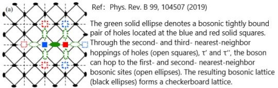

Welcome to my profile!
My name is Xinlei YUE
I am a junior student majoring Physics at SJTU.
Explore the unknown!
About Me
Unknown is my target.
I found great interest in understanding and exploring the world. So I am taking part in research projects and training myself to be a researcher. The main project I am working on is the Bose liquid. I made various mistakes and took many edtours. However, I really learn a lot from it. For more details, see the folowing research section for a full story.

Research
Bose Liquid
The story begins 10 years ago. My advisor Wei Ku fitted the ARPES spectrum of cuprate via most local Wannier function and t-J Hamiltonian. He found that only the second and third nearest hopping terms and J terms contribute. What's more he observed a change of the relative strength of these two hopping when dope the cuprate from under doped region superconducting region.
Later, Wei and his PostDoc consider a model that two fermions on the nearest sites form a boson describing by a tight binding Hamiltonian with the hopping terms of the same strength (see the figure below).The interesting part is they realized this model could explain the bose metal phase!
The problem at the moment is if their theory could discribe the cuprate, then the experiments must be explained by this model. My project is understanding what happens when we do angle resolved photoemission spectroscopy (ARPES) measurement on systems discribed by our model and compare with the experiment.
My seniors have already made some progress. They showed that the STM spectra calculated based on our model shows a very similar shape with the experiment (even the "V" shape spectra at zero bias which is quite hard to obtain from other model). However there's a factor of 2 shows up in voltage axis in his result.
The progress in ARPES is also charming that they considered the scattering of fermions against our boson model and they found a finite zero-energy scattering rate at the low-temperature limit that grows linearly with respect to temperature, against clean fermions’ generic nondissipative characteristics. What's more they can explain the "kink" and two more abnomous behaviour of ARPES. However, in their model, they don't understand why fermions still exist fermions since there are binding energy forcing the fermions to pair.
Research
My Research Experience
Things didn't go well from the beginning. After I reviewed the papers about theory discription of ARPES measurement for fermion systems, several problems appeared immediately when I try to generalized the theory to boson systems. The first question is what physical process does the ARPES do. We know in fermion systems, the incident light ejects electrons from the material. However, in our boson system, it's not clear whether the incident light kicks out the boson as a whole directly and the boson de-paired in the vacuum into electrons or the incident light break the boson and ejects only one electron. The second problem is, according to the previous calculating about other property of the system, the boson system is sensitive to the numer of boson in it. In the fermion case, we could use the zero current limit which consider the current to be so small that the system behaves like non-pertubated. However, in the boson system, we have to either consider curernt correlation or solve the non-equilibrium problem through Keldysh formlism.
Honestly, from the efficiency point of view, I really wasted much time on irralavent topics. When I tried to learn the Keldysh formalism, I notice that this formalism developed from Schwinger's method in particle physics.I wanted to be more clear about this method so I searched and learned more about particle physics. I am fascinated by the interesting and charming ideas in particle physics, such as why the spin has to be integer or half-integer, the connection of spin and statistics, funny diagrams, Higgs mechanism, Standard Model and so on. It takes me several months to learn about these and after that I realised that it's meaningless to my project. (I'm typing the notes about filed theory from bottom-up approach and you can get finished chapters from the following note section.)
From then on, I was quite chear about what to do next. I reviewed the information we have and reconsider the previous results given by my seniors carefully and realized a very possiable solution to fix all the problems in their results. I suspected there always existed fermions in the system and the population of the fermion is limited by the binding energy. This could solved the factor of 2 problem in precious calculation of STM since at the moment only one electron tunneling and the energy cost would be eV rather than 2eV and explain why the boson-fermion scattering picture fits so well with ARPES ecperiment. So I tried to get the possible statistics for the mixed system from pure statistics perspective and from the consideration of equilibrium between the boson and fermion system (in equilibrium, the expectation value of the change of the particle number (boson or fermion) should be zero).
However, after discussion, I realised that these method could not give us more information directly since ther's a binding energy need to be fixed according to the real relative population of bosons and fermions.
Surprisingly, Wei and his PostDoc came up with a promising idea. Similar to my fermion boson mixed picture, but a completely different origin of the fermions in the system. They argued that there would be a fermion surface on the top of the sample due to the way (chipping) we prepared the samples.
At the moment, as a proper approximation at low temperature, we could get a preliminary idea about what we will see in ARPES and STM by treating the coupling of the fermions at top and boson in bulk via mean field theory. We could see whether or not this picture works in a couple of days!
Notes
Field Theory
I touch this topic when I tried solving the problem in my project in the wrong direction. However, I found the particle physics is also charming and has a lot of application in condense matter physics. I am trying to combaine them and compare them in my notes ( it's a huge topic and I haven't finished neither learning or typing). For the particle physics point of view the note mainly follows Steven Weinberg and for condense matter point of view the note mainly follows Alexander Altland, Ben Simons and Xiaogang Wen.
Differential Manifold
It comes from the the lecture I tooked in this term. Hand-writing only at the moment.
To Be Continued
Contact
Don't hesitate to contact me if you have any questions or suggestions.
Email: sixthousandmile@sjtu.edu.cn
Adress: Shanghai Jiao Tong University, Shanghai, China